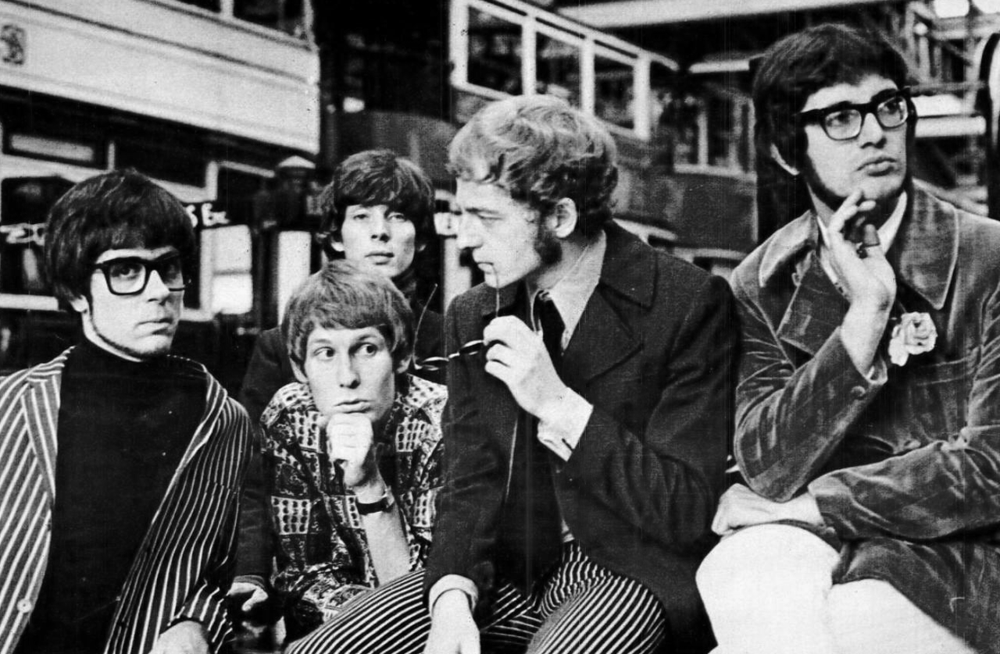

he band Manfred Mann with, from left to right Manfred Mann, Mike
d'Abo, Klaus Voormann, Mike Hugg and Tom McGuinness.
Manfred Mann är en brittisk rockgrupp bildad i London 1962 av
keyboardisten Manfred Mann (född Manfred Sepse Lubowitz 21 oktober 1940
i Johannesburg i Sydafrika), som senare ledde den framgångsrika
1970-talsgruppen Manfred Mann's Earth Band.